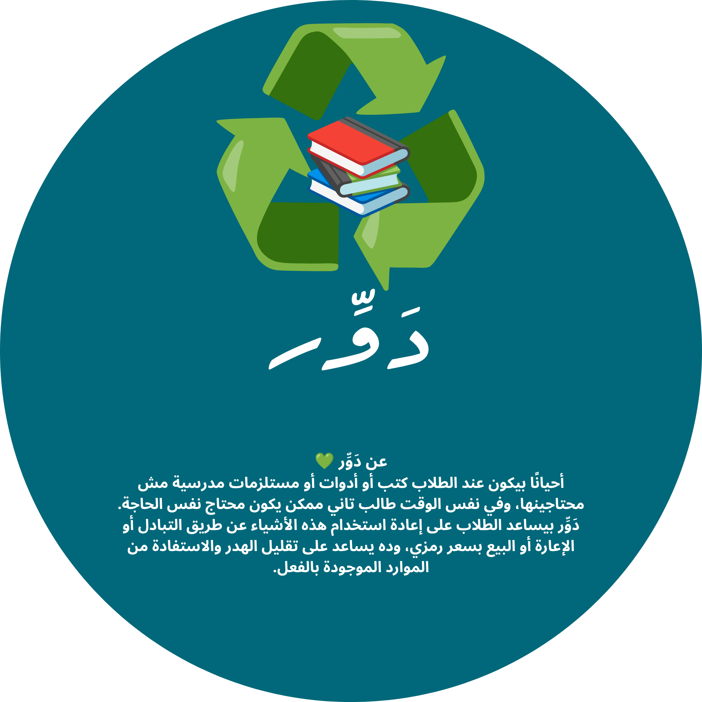

دَوِّر
منصة مدرسية تساعدك تعيد استخدام أدواتك المدرسية بدل ما ترميها أو تشتري جديدة. بدّلها، استعرها، أو بيعها بسعر رمزي لزميلك في المدرسة.
أثرنا مع بعض 🌱
* الأرقام دي بتتحدث تلقائياً وبشكل حقيقي بناءً على الأدوات والطلاب المشاركين فعلياً على الموقع.
كيف تعمل دَوِّر؟
1. اعرض أداتك
ما تحتاجه بعد الآن؟ أضفه للمنصة بسهولة.
2. غيرك يلاقيها
طالب ثاني يحتاجها يشوفها ويتواصل معاك.
3. تبادل، استعارة، أو بيع رمزي
اختاروا الطريقة الأنسب لكم الاثنين.
تصفح الأدوات المتاحة
هذه الأدوات عرضها طلاب آخرون، اضغط "أضف أداة" لو عندك شيء تضيفه.
أضف أداة جديدة
عبّي المعلومات التالية وبتنضاف أداتك لقائمة التصفح مباشرة.
عن دَوِّر

المشكلة
كل سنة دراسية، كثير من الطلاب يشترون أدوات وكتب جديدة رغم إن نفس الأدوات موجودة عند طلاب آخرين خلصوا منها. هذا يسبب هدر في المال وزيادة في النفايات غير الضرورية.
كيف تساعد دَوِّر؟
دَوِّر منصة بسيطة تتيح للطلاب في نفس المدرسة إعادة استخدام أدواتهم المدرسية بدل رميها. يقدر أي طالب يعرض أداة ما عاد يحتاجها، وطالب ثاني يلاقيها ويختار يبدّلها، يستعيرها، أو يشتريها بسعر رمزي بسيط.
ليش هذا مهم؟
- يقلل الهدر والنفايات المدرسية.
- يوفر المصاريف على الطلاب وأهاليهم.
- يعزز ثقافة التعاون والمشاركة بين الطلاب.
ملاحظة تقنية
هذا الإصدار من دَوِّر مبني بالكامل بلغات الواجهة الأمامية (HTML, CSS, JavaScript) ويخزّن البيانات داخل متصفح كل مستخدم، وهذا اختيار مقصود يخدم الهدف التعليمي للمشروع ويسمح بتجربته فوراً دون الحاجة لخادم أو استضافة. الخطوة التالية في خطة تطوير المشروع هي ربطه بقاعدة بيانات سحابية مشتركة بين كل طلاب المدرسة.
أهداف المشروع 🎯
دَوِّر مش بس موقع، هو خطوة عملية نحو مدرسة أقل هدر وأكتر تعاون.
تقليل الهدر البيئي
تقليل كمية الكتب والأدوات المدرسية اللي بترمى كل سنة بلا داعي.
توفير المصاريف
مساعدة الطلاب وأهاليهم على توفير فلوس شراء أدوات ممكن تكون متوفرة أصلاً عند زميل.
تعزيز روح التعاون
بناء ثقافة مشاركة ومساعدة بين الطلاب بدل الاعتماد الكامل على الشراء الفردي.
توظيف التكنولوجيا لخدمة المجتمع
استخدام مهارات البرمجة (HTML, CSS, JavaScript) لحل مشكلة حقيقية في البيئة المدرسية.
دعم فكرة إعادة الاستخدام
غرس مفهوم "الاقتصاد الدائري" لدى الطلاب: إعادة استخدام الأشياء بدل استهلاكها ورميها.
تنمية الوعي الرقمي
تشجيع الطلاب على الابتكار وتوظيف التحول الرقمي في حياتهم المدرسية اليومية.
أدواتي
هنا هتلاقي الأدوات اللي أنت أضفتها.
لسه مفيش أدوات أضفتها.